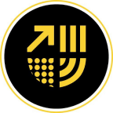
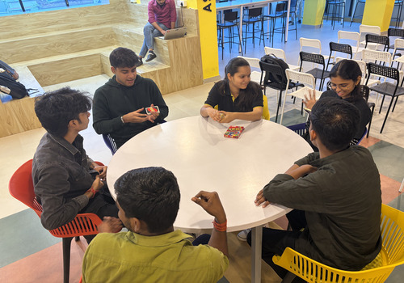
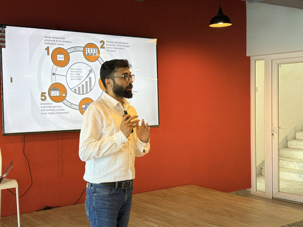
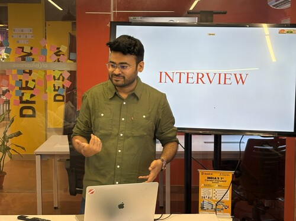

A refined, editorial identity in the register of Harvard Business School — credible enough to reassure parents, modern enough to win students. Black & white anchor, a disciplined colour spectrum, and a pattern toolkit pulled straight from the Quad mark.

Quad's hardest job is trust — Tier-2/3 parents hold veto power and are skeptical of a non-UGC school. An HBS-style institutional system signals legitimacy and seriousness. The colour spectrum and patterns keep it ambitious and young. We get both, without the chaos of a maximalist collage.
Black on white. One flexible grotesque. All-caps eyebrows under a thin rule. Generous white space. Serious, documentary photography of real students. This is the "Quad is a real institution" layer — it never changes.
A disciplined set of jewel-tones — one per school — and four geometric patterns drawn from the logo. Used as accents, dividers, and on social, never as full neon panels. This is the "Quad is built for what's next" layer.
The enduring foundation, exactly as HBS leads with crimson + black. Quad's signature is the gold already living in the logo mark — used sparingly, for the parent brand and connective tissue. Everything sits on white with disciplined neutrals.
Like HBS's "contemporary spectrum," Quad has a fixed set of refined hues with tonal steps. Three are reserved as school colours (below); the rest are support — for charts, categories, and editorial accents. All saturated, none neon.
Each hue carries 3 tonal steps (dark / base / light). Base values are the headline colours; tints are for backgrounds and charts.
Colour identifies the school across selectors, course pages, and social. Always presented in the editorial frame — as an eyebrow rule, a band, or a pattern tint — never as a wall of neon. Jewel-tones for gravitas.
The Quad logo is four quadrants — and each quadrant is a different geometric motif. That's a complete pattern toolkit. We pull them out, scale them up, and use them as backgrounds, dividers, and social texture, tinted in the signature gold or a school hue.
One motif per message — never mix two in the same frame. Gold on ink for the parent brand; the school hue when the surface belongs to a school.
HBS runs everything on Graphik. Quad does the same — a single neutral grotesque across all weights. Shown here in Hanken Grotesk as a free stand-in; Graphik (or Söhne / Founders Grotesk) is the licensed target. The signature move: an all-caps eyebrow over a thin rule.
Quad's real strength is authentic, documentary photography — actual students mid-work, presenting, building. The raw shots are honest but inconsistent. The job of the system is one repeatable treatment that makes any phone-shot photo look like Quad.



Actual imagery from quadcse.com — candid, warm, real faces. This is the raw material; never replace it with stock.
Photo + dark scrim from the bottom + a pattern motif in the corner (school hue) + eyebrow-with-bar + bold headline. Same lockup every time = instantly recognisable feed.
I've made Quad's "crimson-equivalent" the gold from the logo (Black + White + Gold). Agree — or should the parent own a different signature, or stay purely black/white?
Technology = Ink Blue, Management = Crimson, Design = Violet. Any swaps? (e.g. Management in deep gold for prestige, Design in magenta.)
Axis=direction, Lines=structure, Dots=community, Arcs=growth. Worth assigning a signature motif per school too, or keep all four shared?
The team loved Moodboard 1 ("New Gen", loud/maximalist). This is the refined opposite. This direction keeps the colour energy but in an institutional frame — does that bridge land for them?